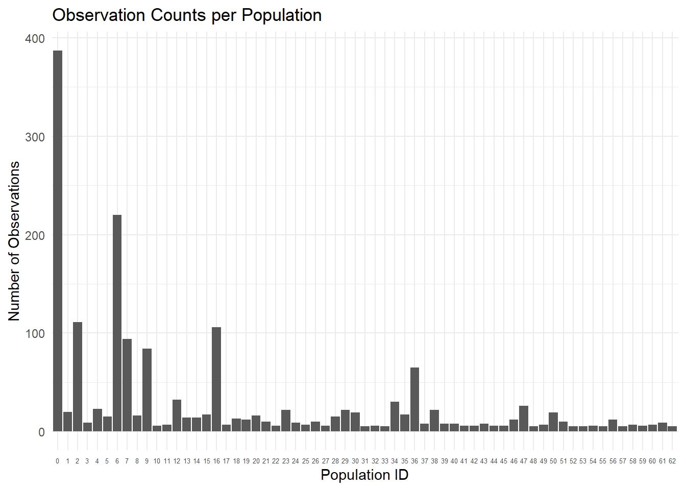
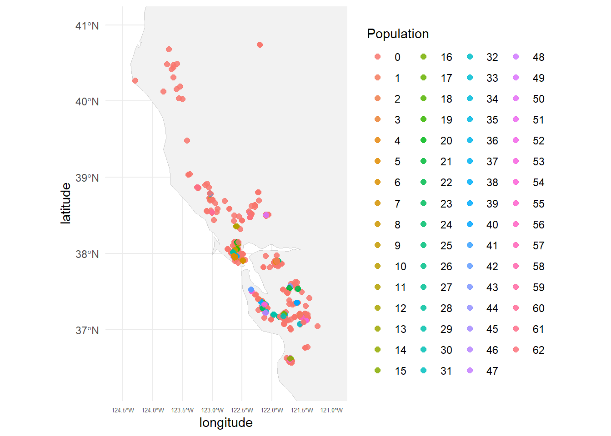
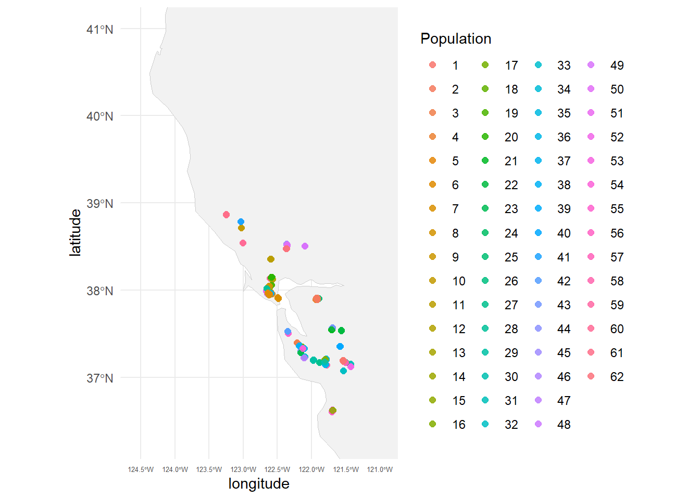

#install.packages("dbscan")
#install.packages("sf")
#install.packages(("ggspatial"))
#install.packages("rnaturalearthdata")
library(dbscan)
library(sf)
library(dplyr)
library(ggplot2)
library(ggspatial)
library(rnaturalearth)Lepto_iNat_Pops
Set up Working Directory and Install/Library Packages
Read in CSV from iNat (Leptosiphon androsaceus)
LA <- read.csv("LAndro_iNat.csv")
names(LA)[1] "id" "url" "image_url" "latitude"
[5] "longitude" "scientific_name"Convert from Degrees to Meters, set up Pops
#Convert to sf object
LA_sf <- st_as_sf(LA, coords = c("longitude", "latitude"), crs = 4326)
#Project to meters
LA_utm <- st_transform(LA_sf, 32611) # change UTM zone if needed
coords <- st_coordinates(LA_utm)Run dbscan and add Pops column to CSV
#Run DBSCAN, 500 m radius populations with 5 or more observations per pop
db <- dbscan(coords, eps = 500, minPts = 5)
#Add population column
LA$population_id <- db$clusterCheck if it worked
table(LA$population_id)
0 1 2 3 4 5 6 7 8 9 10 11 12 13 14 15 16 17 18 19
387 20 111 9 23 15 220 94 16 84 6 7 32 14 14 17 106 7 13 12
20 21 22 23 24 25 26 27 28 29 30 31 32 33 34 35 36 37 38 39
16 10 6 22 9 7 10 6 15 22 19 5 6 5 30 17 65 8 22 8
40 41 42 43 44 45 46 47 48 49 50 51 52 53 54 55 56 57 58 59
8 6 6 8 6 6 12 26 5 7 19 10 5 5 6 5 12 5 7 6
60 61 62
7 9 5 sum(LA$population_id == 0)[1] 387Save CSV
write.csv(LA, "LAndro_iNat_Pops.csv", row.names = FALSE)Visualize data
NOTE: All observations beloning to population ‘0’ are singelton observations, that did not meet our population criteria (5 obs within 500 m)
#List pop sizes
pop_sizes <- LA %>%
count(population_id, name = "n_obs") %>%
arrange(desc(n_obs))
pop_sizes population_id n_obs
1 0 387
2 6 220
3 2 111
4 16 106
5 7 94
6 9 84
7 36 65
8 12 32
9 34 30
10 47 26
11 4 23
12 23 22
13 29 22
14 38 22
15 1 20
16 30 19
17 50 19
18 15 17
19 35 17
20 8 16
21 20 16
22 5 15
23 28 15
24 13 14
25 14 14
26 18 13
27 19 12
28 46 12
29 56 12
30 21 10
31 26 10
32 51 10
33 3 9
34 24 9
35 61 9
36 37 8
37 39 8
38 40 8
39 43 8
40 11 7
41 17 7
42 25 7
43 49 7
44 58 7
45 60 7
46 10 6
47 22 6
48 27 6
49 32 6
50 41 6
51 42 6
52 44 6
53 45 6
54 54 6
55 59 6
56 31 5
57 33 5
58 48 5
59 52 5
60 53 5
61 55 5
62 57 5
63 62 5#Bar plot of pop sizes
ggplot(pop_sizes, aes(x = factor(population_id), y = n_obs)) +
geom_col() +
labs(x = "Population ID",
y = "Number of Observations",
title = "Observation Counts per Population") +
theme_minimal() +
theme(axis.text.x = element_text(size = 5))
Visualize pops on a map
# Get world basemap
world <- ne_countries(scale = "medium", returnclass = "sf")
# Bounding box around our data
bbox <- c(
xmin = min(LA$longitude) - 0.5,
xmax = max(LA$longitude) + 0.5,
ymin = min(LA$latitude) - 0.5,
ymax = max(LA$latitude) + 0.5
)
# Plot
ggplot() +
geom_sf(data = world, fill = "gray95", color = "gray80") +
geom_point(data = LA,
aes(x = longitude, y = latitude,
color = factor(population_id)),
size = 2, alpha = 0.85) +
coord_sf(xlim = c(bbox["xmin"], bbox["xmax"]),
ylim = c(bbox["ymin"], bbox["ymax"]),
expand = FALSE) +
labs(color = "Population") +
theme_minimal() +
theme(axis.text.x = element_text(size = 5))
##Lets remove noise from ‘pop 0’ singelton observation
# Remove noise points (population_id == 0)
LA_clean <- LA %>%
filter(population_id != 0)
# Quick check
table(LA_clean$population_id)
1 2 3 4 5 6 7 8 9 10 11 12 13 14 15 16 17 18 19 20
20 111 9 23 15 220 94 16 84 6 7 32 14 14 17 106 7 13 12 16
21 22 23 24 25 26 27 28 29 30 31 32 33 34 35 36 37 38 39 40
10 6 22 9 7 10 6 15 22 19 5 6 5 30 17 65 8 22 8 8
41 42 43 44 45 46 47 48 49 50 51 52 53 54 55 56 57 58 59 60
6 6 8 6 6 12 26 5 7 19 10 5 5 6 5 12 5 7 6 7
61 62
9 5 ggplot() +
geom_sf(data = world, fill = "gray95", color = "gray80") +
geom_point(data = LA_clean,
aes(x = longitude, y = latitude,
color = factor(population_id)),
size = 2, alpha = 0.85) +
coord_sf(xlim = c(bbox["xmin"], bbox["xmax"]),
ylim = c(bbox["ymin"], bbox["ymax"]),
expand = FALSE) +
labs(color = "Population") +
theme_minimal() +
theme(axis.text.x = element_text(size = 5))
##Finish and Save
# Save to new CSV
write.csv(LA_clean, "LAndro_iNat_Pops_filtered.csv", row.names = FALSE)